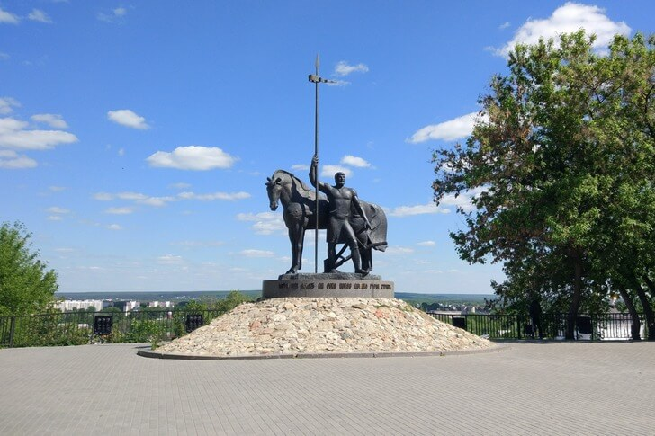

Город Пенза
Пенза - областной центр Пензенской области.
Город Пенза расположен на реках Сура и Пенза (в черте города в Суру впадает маленькая речка Мойка) в 709 км к востоку от Москвы. Исторический центр находится в центре города Пенза на реке Сура. Город получил свое название по названию реки Пенза (Пиенза), впадающей в Суру у города. Город Пенза насчитывает более трех столетий своей истории. До 1663 года Пенза представляла собой деревянный острог с небольшим посадом. В мае 1663 года в Пензу по приказу царя прибыл архитектор Ю.Е. Контранский. Под его руководством было начато строительство города - крепости.
Город получил свое название по названию реки Пенза (Пиенза), впадающей в Суру у города.
Город Пенза насчитывает более трех столетий своей истории.
До 1663 года Пенза представляла собой деревянный острог с небольшим посадом. В мае 1663 года в Пензу по приказу царя прибыл архитектор Ю.Е. Контранский. Под его руководством было начато строительство города - крепости. Пензенская крепость с первых лет основания выдерживала немало нападений и штурмов со стороны степных кочевников. В Пензе с начала XVIII века развивается торговля, ежегодно проводятся две ярмарки.
В 1719 году Пенза становится центром Пензенской провинции Казанской губернии, а в 1780 году - центром Пензенского наместничества. В 1796 году Пенза была объявлена губернским городом. Пенза имела заслуженную репутацию одного из крупнейших гнезд российского дворянства, олицетворявшего собой могущество и славу государства. Ускоренный рост Пензы начинается в середине 60-х годов XIX века, после отмены крепостного права. Город Пенза расширяется на север, северо-запад и в заречную часть.
Особое влияние на развитие города оказало проведение через Пензу Сызрано-Вяземской (1874), Рязано-Уральской (1896) и Московско-Казанской (1895) железных дорог. В Пензе были открыты два монастыря (мужской и женский), 26 православных церквей, лютеранская церковь, костел и мечеть. С 1928 года Пенза - центр Пензенского округа Средневолжского, затем Куйбышевского края, с 1937 года - Тамбовской области. В 1939 году Пензенская область, выделившись из Тамбовской, была образована как самостоятельная территориально-административная единица, где областным центром стала Пенза. Пенза - крупный промышленный и культурный центр. В Пензе расположено множество культурных и образовательных учреждений, предприятий различных отраслей промышленности. Во время Второй Мировой Войны предприятия города Пензы активно работали на оборону страны.
В Пензе работает драматический театр, кукольный театр, филармония, цирк. В Пензе 8 музеев: краеведческий, литературный, сценического искусства им. Мейерхольда, народного творчества, Ильи Николаевича Ульянова, Николая Ниловича Бурденко, картинная галерея им. Савицкого, музей одной картины.
